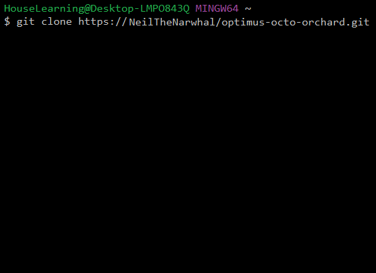
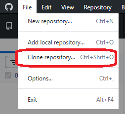

🔗 How to Clone a Repository
Cloning a repo basically means:
“download the whole project, with all its history, to your computer.”
It’s how you grab someone else’s project, or sync your own GitHub repo to your machine.
☑️ When do you clone?
- When you're starting work on a GitHub project
- When joining a team repo
- When switching computers
- When you want the full version history + branches
✅ Cloning ≠ downloading ZIP.
Cloning keeps the whole Git history, branches, and lets you commit + push.
📚 Example: Cloning a Repo (Git)
Output will appear here...
📚 Example: Cloning using GitHub Desktop
Output will appear here...
🔥 VS Code users:
You can open the folder and instantly get Git integration, source control, branch switching, etc.
📸 Snapshots

